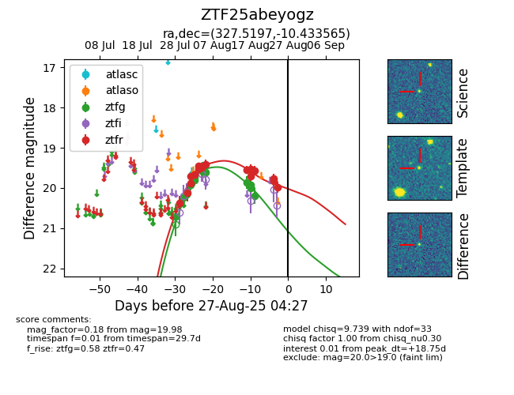

Target ZTF25abeyogz at 2025-08-27 08:57, see:
FINK: fink-portal.org/ZTF25abeyogz
Lasair: lasair-ztf.lsst.ac.uk/objects/ZTF25abeyogz
ALeRCE: alerce.online/object/ZTF25abeyogz
alt names
ZTF25abeyogz (ztf,fink)
coordinates:
equatorial (ra, dec) = (327.5197,-10.43356)
galactic (l, b) = (45.3506,-44.25130)
photometry
last ztfg=20.19, ztfr=20.01
13 ztfg, 17 ztfr detections
